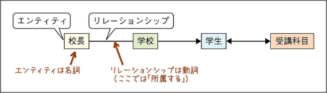

ITパス暗記ノート
13章
関係データモデル
データの集まりを表形式で表現する。
・関係データベースは、表の集まり
・表は、行の集まり
・行は、フィールドの集まり
主キー
同一の値を持つことができない（重複はダメ）
NULLの値を持つことができない（NULLはダメ）
複数の列を組み合わせて設定できる（複合主キー）
インデックス
データの検索を高速化する
E-R図
(Entity-Relationship Diagram)
データベースを設計するときに、表同士の関連を表す図

正規化
データが重複したり、データ更新の際に矛盾が生じたりしないようにすること
DBMS
(DataBase Manegement System)
アプリケーションの要求に応じてDBを操作するシステム
データ操作、トランザクション管理、排他制御
SQL
関係データベースを操作するための言語
・選択とは、表からある特定の行のみを取り出す操作
・射影とは、表からある特定の列のみを取り出す操作
・結合とは、複数の表を1つにする操作
トランザクション管理
ユーザーがDBMSに対して行う一連の命令を管理する機能
コミット
トランザクションが正常に完了した際に、データベースの更新内容を確定すること
ログファイル
データベースの更新履歴を記録したファイル
排他制御
複数人が同じデータを同時に更新しようとした場合に、ロックを使ってデータに矛盾が生じないようにする機能（データの一貫性を保つ機能）